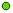
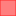
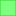
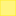

<!doctype html>
<html lang="en">
    <head>
        <meta charset="utf-8">
        <meta http-equiv="X-UA-Compatible" content="IE=edge">
        <meta name="viewport" content="initial-scale=1,user-scalable=no,maximum-scale=1,width=device-width">
        <meta name="mobile-web-app-capable" content="yes">
        <meta name="apple-mobile-web-app-capable" content="yes">
        <link rel="stylesheet" href="css/leaflet.css"><link rel="stylesheet" href="css/L.Control.Locate.min.css">
        <link rel="stylesheet" href="css/qgis2web.css"><link rel="stylesheet" href="css/fontawesome-all.min.css">
        <link rel="stylesheet" href="css/leaflet-measure.css">
        <style>
        html, body, #map {
            width: 100%;
            height: 100%;
            padding: 0;
            margin: 0;
        }
        </style>
        <title></title>
    </head>
    <body>
        <div id="map">
        </div>
        <script src="js/qgis2web_expressions.js"></script>
        <script src="js/leaflet.js"></script><script src="js/L.Control.Locate.min.js"></script>
        <script src="js/leaflet.rotatedMarker.js"></script>
        <script src="js/leaflet.pattern.js"></script>
        <script src="js/leaflet-hash.js"></script>
        <script src="js/Autolinker.min.js"></script>
        <script src="js/rbush.min.js"></script>
        <script src="js/labelgun.min.js"></script>
        <script src="js/labels.js"></script>
        <script src="js/leaflet-measure.js"></script>
        <script src="data/Areas_1.js"></script>
        <script src="data/Tracks_2.js"></script>
        <script src="data/Points_3.js"></script>
        <script>
        var map = L.map('map', {
            zoomControl:true, maxZoom:28, minZoom:1
        }).fitBounds([[32.05231173188751,34.77864979011408],[32.369734927464364,35.125953159727054]]);
        var hash = new L.Hash(map);
        map.attributionControl.addAttribution('<a href="https://github.com/tomchadwin/qgis2web" target="_blank">qgis2web</a>');
        L.control.locate().addTo(map);
        var measureControl = new L.Control.Measure({
            position: 'topleft',
            primaryLengthUnit: 'meters',
            secondaryLengthUnit: 'kilometers',
            primaryAreaUnit: 'sqmeters',
            secondaryAreaUnit: 'hectares'
        });
        measureControl.addTo(map);
        document.getElementsByClassName('leaflet-control-measure-toggle')[0]
        .innerHTML = '';
        document.getElementsByClassName('leaflet-control-measure-toggle')[0]
        .className += ' fas fa-ruler';
        var bounds_group = new L.featureGroup([]);
        function setBounds() {
        }
        var overlay_GoogleSatellite_0 = L.tileLayer('https://mt1.google.com/vt/lyrs=s&x={x}&y={y}&z={z}', {
            opacity: 1.0
        });
        overlay_GoogleSatellite_0.addTo(map);
        map.addLayer(overlay_GoogleSatellite_0);
        function pop_Areas_1(feature, layer) {
            var popupContent = '<table>\
                    <tr>\
                        <td colspan="2">' + (feature.properties['Dunam'] !== null ? Autolinker.link(String(feature.properties['Dunam'])) : '') + '</td>\
                    </tr>\
                    <tr>\
                        <th scope="row">layer</th>\
                        <td>' + (feature.properties['layer'] !== null ? Autolinker.link(String(feature.properties['layer'])) : '') + '</td>\
                    </tr>\
                    <tr>\
                        <th scope="row">type</th>\
                        <td>' + (feature.properties['type'] !== null ? Autolinker.link(String(feature.properties['type'])) : '') + '</td>\
                    </tr>\
                </table>';
            layer.bindPopup(popupContent, {maxHeight: 400});
        }

        function style_Areas_1_0(feature) {
            switch(String(feature.properties['type'])) {
                case 'Bottleneck':
                    return {
                pane: 'pane_Areas_1',
                opacity: 1,
                color: 'rgba(255,35,35,1.0)',
                dashArray: '',
                lineCap: 'butt',
                lineJoin: 'miter',
                weight: 1.0, 
                fill: true,
                fillOpacity: 1,
                fillColor: 'rgba(255,0,0,0.5019607843137255)',
            }
                    break;
                case 'District':
                    return {
                pane: 'pane_Areas_1',
                opacity: 1,
                color: 'rgba(35,218,35,1.0)',
                dashArray: '',
                lineCap: 'butt',
                lineJoin: 'miter',
                weight: 1.0, 
                fill: true,
                fillOpacity: 1,
                fillColor: 'rgba(0,255,0,0.5019607843137255)',
            }
                    break;
                case 'National':
                    return {
                pane: 'pane_Areas_1',
                opacity: 1,
                color: 'rgba(255,234,35,1.0)',
                dashArray: '',
                lineCap: 'butt',
                lineJoin: 'miter',
                weight: 1.0, 
                fill: true,
                fillOpacity: 1,
                fillColor: 'rgba(255,238,0,0.5019607843137255)',
            }
                    break;
            }
        }
        map.createPane('pane_Areas_1');
        map.getPane('pane_Areas_1').style.zIndex = 401;
        map.getPane('pane_Areas_1').style['mix-blend-mode'] = 'normal';
        var layer_Areas_1 = new L.geoJson(json_Areas_1, {
            attribution: '<a href=""></a>',
            pane: 'pane_Areas_1',
            onEachFeature: pop_Areas_1,
            style: style_Areas_1_0,
        });
        bounds_group.addLayer(layer_Areas_1);
        map.addLayer(layer_Areas_1);
        function pop_Tracks_2(feature, layer) {
            var popupContent = '<table>\
                    <tr>\
                        <th scope="row">corridor</th>\
                        <td>' + (feature.properties['corridor'] !== null ? Autolinker.link(String(feature.properties['corridor'])) : '') + '</td>\
                    </tr>\
                </table>';
            layer.bindPopup(popupContent, {maxHeight: 400});
        }

        function style_Tracks_2_0() {
            return {
                pane: 'pane_Tracks_2',
                opacity: 1,
                color: 'rgba(217,217,217,1.0)',
                dashArray: '',
                lineCap: 'square',
                lineJoin: 'bevel',
                weight: 3.0,
                fillOpacity: 0,
            }
        }
        map.createPane('pane_Tracks_2');
        map.getPane('pane_Tracks_2').style.zIndex = 402;
        map.getPane('pane_Tracks_2').style['mix-blend-mode'] = 'normal';
        var layer_Tracks_2 = new L.geoJson(json_Tracks_2, {
            attribution: '<a href=""></a>',
            pane: 'pane_Tracks_2',
            onEachFeature: pop_Tracks_2,
            style: style_Tracks_2_0,
        });
        bounds_group.addLayer(layer_Tracks_2);
        map.addLayer(layer_Tracks_2);
        function pop_Points_3(feature, layer) {
            var popupContent = '<table>\
                    <tr>\
                        <td colspan="2">' + (feature.properties['Proximity'] !== null ? Autolinker.link(String(feature.properties['Proximity'])) : '') + '</td>\
                    </tr>\
                    <tr>\
                        <th scope="row">Class</th>\
                        <td>' + (feature.properties['Class'] !== null ? Autolinker.link(String(feature.properties['Class'])) : '') + '</td>\
                    </tr>\
                    <tr>\
                        <th scope="row">layer</th>\
                        <td>' + (feature.properties['layer'] !== null ? Autolinker.link(String(feature.properties['layer'])) : '') + '</td>\
                    </tr>\
                </table>';
            layer.bindPopup(popupContent, {maxHeight: 400});
        }

        function style_Points_3_0(feature) {
            switch(String(feature.properties['Class'])) {
                case 'Far':
                    return {
                pane: 'pane_Points_3',
                radius: 4.0,
                opacity: 1,
                color: 'rgba(35,35,35,1.0)',
                dashArray: '',
                lineCap: 'butt',
                lineJoin: 'miter',
                weight: 1,
                fill: true,
                fillOpacity: 1,
                fillColor: 'rgba(99,217,0,1.0)',
            }
                    break;
                case 'Near':
                    return {
                pane: 'pane_Points_3',
                radius: 4.0,
                opacity: 1,
                color: 'rgba(35,35,35,1.0)',
                dashArray: '',
                lineCap: 'butt',
                lineJoin: 'miter',
                weight: 1,
                fill: true,
                fillOpacity: 1,
                fillColor: 'rgba(255,0,0,1.0)',
            }
                    break;
                case 'Overpass':
                    return {
                pane: 'pane_Points_3',
                radius: 4.0,
                opacity: 1,
                color: 'rgba(35,35,35,1.0)',
                dashArray: '',
                lineCap: 'butt',
                lineJoin: 'miter',
                weight: 1,
                fill: true,
                fillOpacity: 1,
                fillColor: 'rgba(255,158,23,1.0)',
            }
                    break;
            }
        }
        map.createPane('pane_Points_3');
        map.getPane('pane_Points_3').style.zIndex = 403;
        map.getPane('pane_Points_3').style['mix-blend-mode'] = 'normal';
        var layer_Points_3 = new L.geoJson(json_Points_3, {
            attribution: '<a href=""></a>',
            pane: 'pane_Points_3',
            onEachFeature: pop_Points_3,
            pointToLayer: function (feature, latlng) {
                var context = {
                    feature: feature,
                    variables: {}
                };
                return L.circleMarker(latlng, style_Points_3_0(feature));
            },
        });
        bounds_group.addLayer(layer_Points_3);
        map.addLayer(layer_Points_3);
        var baseMaps = {};
        L.control.layers(baseMaps,{'Points<br /><table><tr><td style="text-align: center;"></td><td>Far</td></tr><tr><td style="text-align: center;"></td><td>Near</td></tr><tr><td style="text-align: center;"></td><td>Overpass</td></tr></table>': layer_Points_3,' Tracks': layer_Tracks_2,'Areas<br /><table><tr><td style="text-align: center;"></td><td>Bottleneck</td></tr><tr><td style="text-align: center;"></td><td>District</td></tr><tr><td style="text-align: center;"></td><td>National</td></tr></table>': layer_Areas_1,"Google Satellite": overlay_GoogleSatellite_0,},{collapsed:false}).addTo(map);
        setBounds();
        </script>
    </body>
</html>
